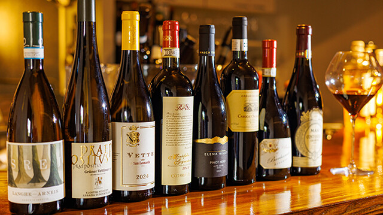
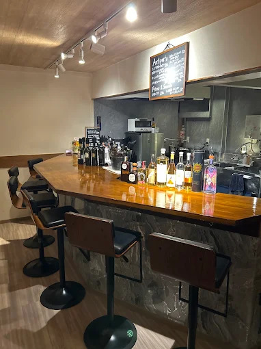
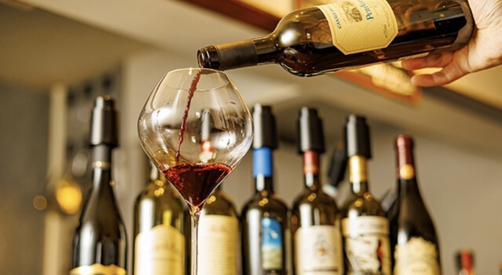
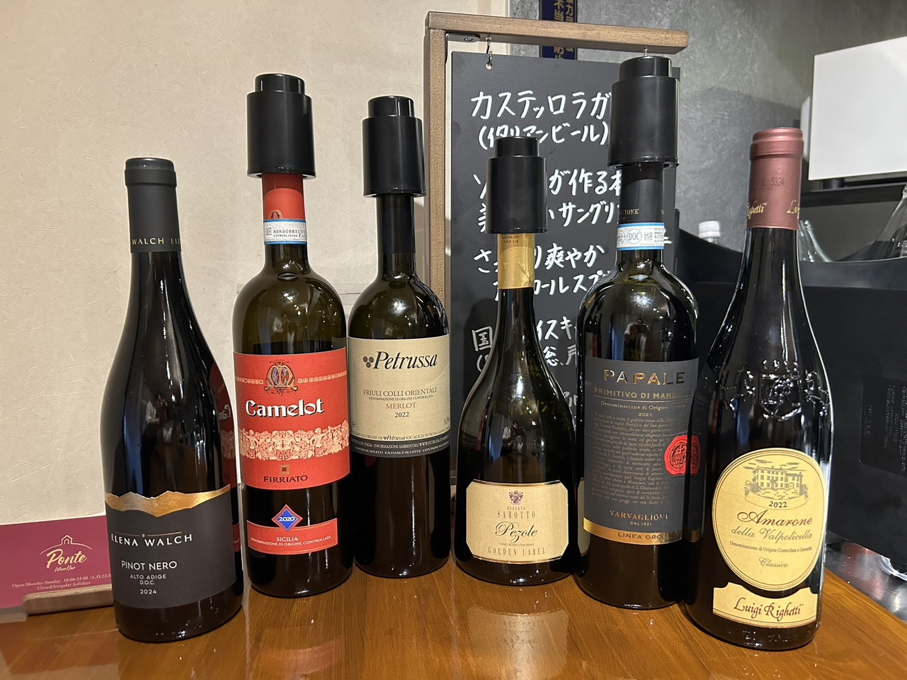
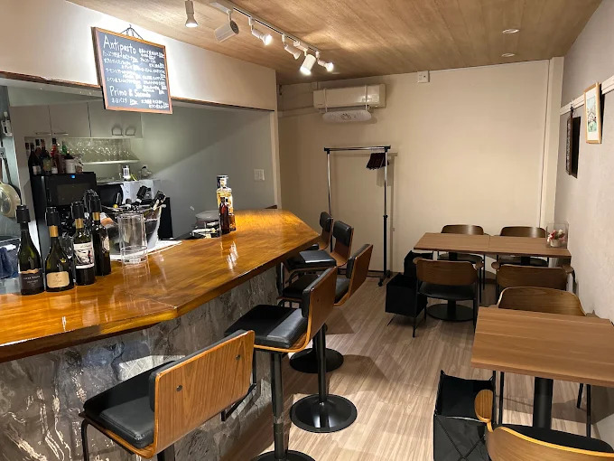
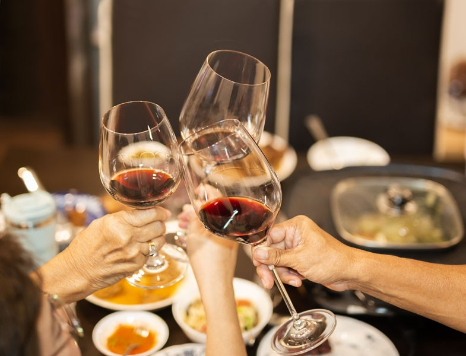

ワインと人がつながる、 心ほどける夜
その日の気分に寄り添う一杯と、
心地よい会話を。
新小岩で気軽に楽しめる、本格ワインバー
Scroll





その日の気分に寄り添う一杯と、
心地よい会話を。
新小岩で気軽に楽しめる、本格ワインバー


ABOUT
新小岩に佇む「Wine Bar Ponte」は、イタリアワインを中心に、さまざまな味わいをグラスで楽しめるワインバーです。
六本木の老舗ワインバーや本格イタリアンで10年以上経験を積んだソムリエが、一人ひとりのお好みを伺いながら、その日の気分に合う一杯をご提案します。
ワインに詳しい方はもちろん、初めての方にも分かりやすくご案内しますので、難しく考えず気軽にお楽しみください。
「Ponte」は、イタリア語で「架け橋」という意味。
ワインをきっかけに、人と人が自然につながる場所を目指しています。
RECOMMEND
FEATURES

「赤が飲みたいけれど、何を選べばいいか分からない」そんな方も大歓迎です。味の好みや気分を伺いながら、ソムリエが一人ひとりに合ったワインをご提案。ワイン初心者の方にも、味わいや特徴を丁寧にご説明します。

イタリアワインを中心に、泡・白・赤など多彩なラインナップをご用意しています。グラスワインは1,100円〜1,800円ほど。一杯ずつ違った味わいを試しながら、自分好みのワインを見つける楽しさも魅力です。食後酒のグラッパやデザートワインなどもお楽しみいただけます。

カウンター席を中心とした、コンパクトで居心地のよい店内。一人で静かにワインを味わうのも、ソムリエや周りの方との会話を楽しむのも、その日の気分次第です。「実家に帰ってきたようにほっとできる」そんな温かな空間づくりを大切にしています。食べログでも、一人でも入りやすい店舗として案内されています。

店名の「Ponte」に込めたのは、人と人をつなぐ架け橋になりたいという想い。仕事で疲れた日も、少し気分を変えたい夜も、ワインを片手に自然体で過ごせる場所として、地域に根付くお店を目指しています。
CUSTOMER VOICE
菊池未来
日曜日の18時ごろに伺いました。
カウンター6席と、テーブルは4人掛け１つ、2人掛けが1つあります！
ソムリエの資格を持つ店長が、料理と気分に合わせてワインを選んでくれました*⸜(* ॑꒳ ॑*
)⸝
スタイリッシュで、ゆったりとした音楽が流れる店内はとても居心地が良く、最高の時間を過ごせます！
聞き上手な店長ですが、ワインについて聞いたらなんでも教えてくれます🥳
一人でふらっと行くのもよし、デートで行くのもよし、間違いなく良い時間を過ごせるワインバーです！
27c349
綺麗な内装で居心地のいい空間でした。
気づいたらこんな時間！？と思えるくらい店主さん、お客さんとの時間を楽しめました^
^
イタリアワインがメインらしく今回は北イタリアが多い印象。肝心のワインも間違いなかったです。
ゆっくりしたい方でも会話を楽しみたい人でも行く価値あります。沢山遊びに行きたいお店でした！
デビール
マスターがマジメ。もっとくだけてもよかったのに。店の雰囲気や品揃えは○。接客もマジメ。1人のお客さんにもしっかり対応していた。
いいワイン。リーズナブル。仕事ぶりも良かった。
ACCESS
| 店舗名 | Wine Bar Ponte |
|---|---|
| 住所 | 〒124-0023 東京都葛飾区東新小岩５丁目７−１ みのりマンション |
| 電話番号 | 050-5448-7080 |
| 営業時間 | 18:00〜24:00 |
| 定休日 | 不定休 |